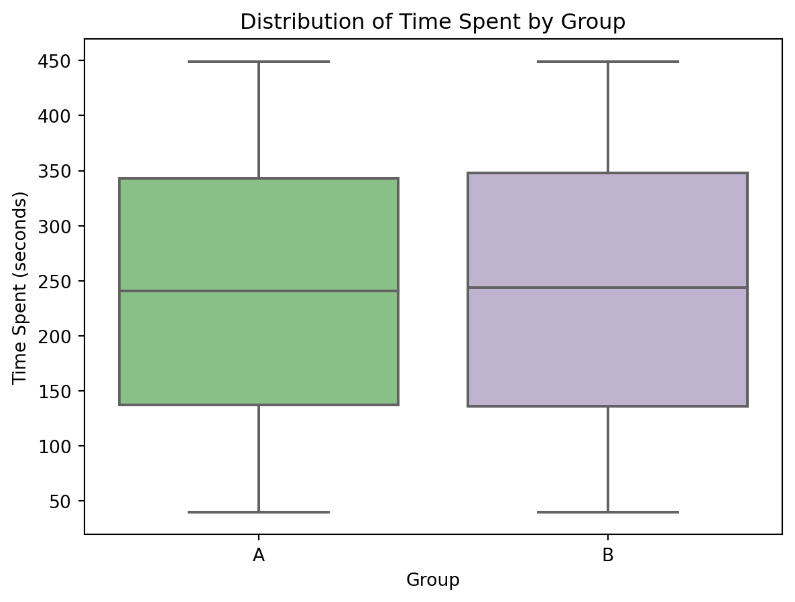
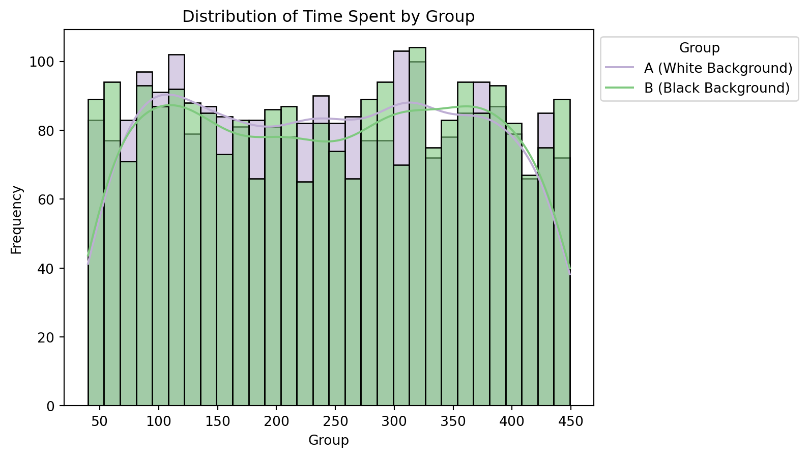
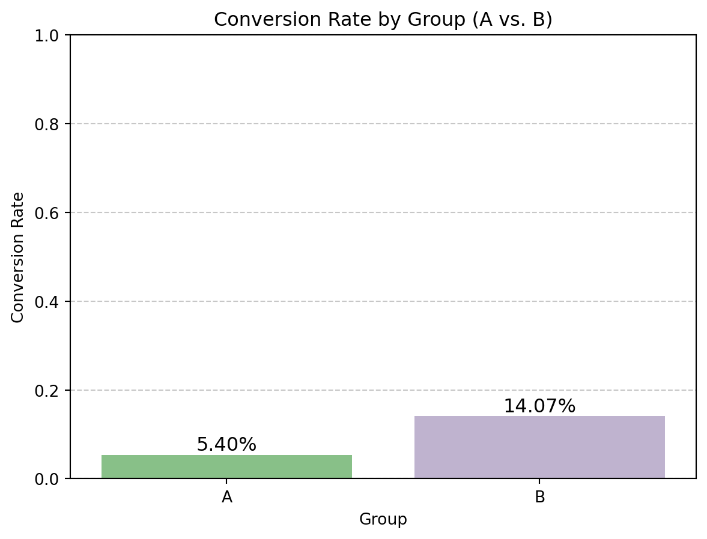

This A/B testing experiemnt aims to analyze the impact of website background color on user engagement and conversion rates. Specifically, I compare a white background (Group A, control group) with a black background (Group B, treatment group) to determine whether the change in design improves user interaction and the liklihood of conversions
Dataset Overview
The dataset used for this was found on Kaggle. This is a synthetic dataset generated using random sampling techniques from the Python NumPy package. It simulates user activity on an imaginery retail website operating across different locations in the United Kingdom.
Experiemental Design
Control Group (A - White Background): Represents the default website setting.
Treament Group (B - Black Blackground): Represents the newly tested setting.
Research Question: Does changing the website background color influence user engangement and conversion rates
Key Variables in the Dataset
User ID: Unique identifer for each user
Group: Indicator whether the user was in Group A (White Background) or Group B (Black Background)
Page Views: Number of pages viewed during the user’s session
Time Spend (seconds): The total duartion the suer spent on the website
Conversion: Whether the user completed a desired action (e.g. purchase, signup, etc.) (Yes/No)
Device: Type of device used (e.g. Mobile, Desktop)
Location: The country in the UK where the user is based
Code
import pandas as pdimport osos.getcwd()df = pd.read_csv('c:\\Users\\HoraceTsai\\Documents\\data\\ab_testing.csv')df.head()
User ID
Group
Page Views
Time Spent
Conversion
Device
Location
0
14292
B
3
424
No
Mobile
Northern Ireland
1
11682
A
9
342
No
Mobile
Scotland
2
19825
A
2
396
No
Desktop
Northern Ireland
3
16080
B
4
318
No
Desktop
Wales
4
18851
A
1
338
Yes
Desktop
Scotland
Statistical Methods Used
To evaluate the impact of the background color change, I used:
T-Test to compare the average time spent on the website between the tewo groups.
Chi-Square Test to analyze differences in conversion rates between the groups.
Significance of the Study
A/B test is a crucial tool in user experience (UX) optimization and digital marketing. Findings from analysis such as this could help business make data-driven design decisions that enhance user engagement and improve conversion rates.
Methodology and Analysis
To help us understand whether a black background (Group B) leads to better user engagement and conversions ocmpared to a white background (Group A), the following analysis was performed:
Exploratory Data Analysis (EDA)
Before conducting any statistical test, I explored the dataset to understand its structure and key distributions:
Summary statistics were calculated for time spent on the website accross both groups
boxplots and histograms were used to visualize the distribution of time spent
Bar charts were created to compare conversion rates between groups
Code
from tabulate import tabulatesummary_stats = df.groupby("Group")["Time Spent"].describe()print(tabulate( summary_stats, headers='keys', tablefmt='pretty'))
+-------+--------+--------------------+--------------------+------+-------+-------+-------+-------+
| Group | count | mean | std | min | 25% | 50% | 75% | max |
+-------+--------+--------------------+--------------------+------+-------+-------+-------+-------+
| A | 2519.0 | 241.73322747121873 | 117.34002634527045 | 40.0 | 137.5 | 241.0 | 343.0 | 449.0 |
| B | 2481.0 | 243.30390971382508 | 119.19355168352757 | 40.0 | 136.0 | 244.0 | 348.0 | 449.0 |
+-------+--------+--------------------+--------------------+------+-------+-------+-------+-------+
Code
import matplotlib.pyplot as pltimport seaborn as snsimport scipy.stats as statssummary_stats = df.groupby("Group")["Time Spent"].describe()summary_stats#plot plt.figure(figsize=(7,5))sns.boxplot( x ="Group", y ="Time Spent", data = df, order = ["A", "B"], palette ="Accent")plt.title("Distribution of Time Spent by Group")plt.xlabel("Group")plt.ylabel("Time Spent (seconds)")plt.grid(False)plt.show()

Boxplot Distribution of Time Spent by Group
From the boxplots shown above we see the following:
The distributions of time spent in both groups are almost identitcal
The median interquartile (IQR) ranges are similar
Code
#plot plt.figure(figsize=(7,5))sns.histplot( df, x ="Time Spent", hue ="Group", kde =True, bins =30, palette ="Accent", alpha =0.6,)plt.title("Distribution of Time Spent by Group")plt.xlabel("Group")plt.ylabel("Frequency")plt.legend(title="Group", labels=["A (White Background)", "B (Black Background)"], loc='upper left', bbox_to_anchor=(1, 1) )plt.grid(False)plt.show()# fairly similar distribution

Histogram Distribution of Time Spent by Group
From the histograms shown above we see the following:
The distributions of time spent across both groups overlap heavily
Both groups have simialr spread and density
Code
# Convert Conversion column to binary (Yes = 1, No = 0)df["Conversion"] = df["Conversion"].map({"Yes": 1, "No": 0})# Calculate conversion rates for each groupconversion_rates = df.groupby("Group")["Conversion"].mean().reset_index()# bar plot for conversion ratesplt.figure(figsize =(7,5))sns.barplot( x ="Group", y ="Conversion", data = conversion_rates, palette ="Accent")# Add annotationsfor index, row in conversion_rates.iterrows(): plt.text(index, row["Conversion"] +0.01, f"{row['Conversion']*100:.2f}%", ha='center', fontsize=12)# Formatting the plotplt.title("Conversion Rate by Group (A vs. B)")plt.xlabel("Group")plt.ylabel("Conversion Rate")plt.ylim(0, 1) # Ensuring y-axis goes from 0 to 1 (100% scale)plt.grid(axis='y', linestyle='--', alpha=0.7)# Show the plotplt.show()

Conversion Rate by Group
The bar chart above shows that Group B (Black Blackground) has a significantly higher conversion rate compared to Group A.
Hypothesis Testing
Code
group_A = df[df["Group"] =="A"]["Time Spent"]group_B = df[df["Group"] =="B"]["Time Spent"]t_stat, p_val = stats.ttest_ind( group_A, group_B, equal_var =False )print(f" T- Statistic: {t_stat}, p-value: {p_val}")# small t- stat meaning group a (white) has a slightly higher mean of time spent vs group B# however difference between the two gorups is not large compared to the variability of the data# therefore no signif diff between background colors # changing website background does not meaningfully affect how long users stay
With a small T- statistic and a high p-value, there is no statistically significant difference in the time spent between the two groups. We can say that changing the website background does not meaningfully affect how long users stay.
Code
# Perform a chi-square test for conversion ratescontingency_table = pd.crosstab(df["Group"], df["Conversion"])chi2_stat, p_value, dof, expected = stats.chi2_contingency(contingency_table)# Display conversion rates and test resultsprint(f"Chi-Square: {chi2_stat}, p-value: {p_value}")
Wtih a high Chi-Squared value and an extremely low p-value, there is a statisitcally difference in conversion rates between the two groups. We can say here that changeing the website background does affect whether the user completed a desired action (e.g. made a purchase, sign up, etc.)
Key Takeaways
Time Spent on Website: No significant difference between groups, suggest that background color does not affect user engagement duration.
Conversion Rate: The black background (Group B) led to a significantly higher conversion rate, indicating that users were more likely to complete a desired action (e.g. made a purchase, sign up, etc.) when the background was black.
Conclusion and Recommendations
Since the black background (Group B) significantly improves conversion rates without negatively affect time spent, I would recommend to implement the black blackgorund as the default design to enhance user performance.
Further testing could be done to analyze other UX factors, such as font color, button placement, or layout changes to maximize user engagement and conversion rates.